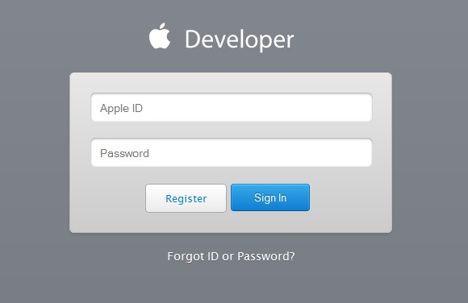
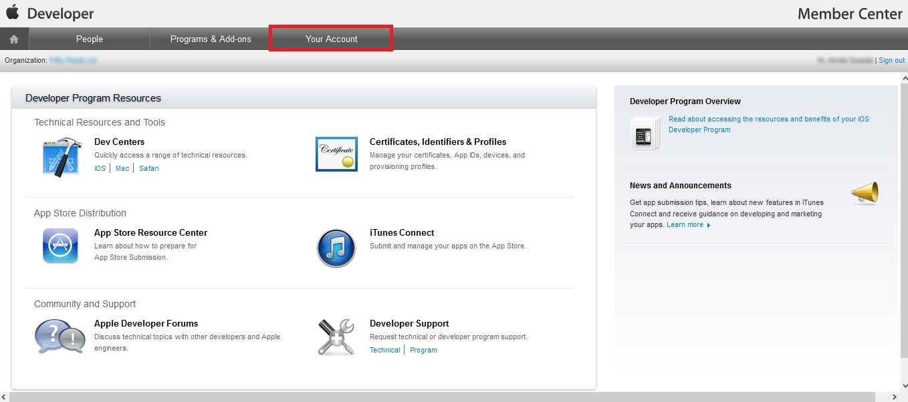
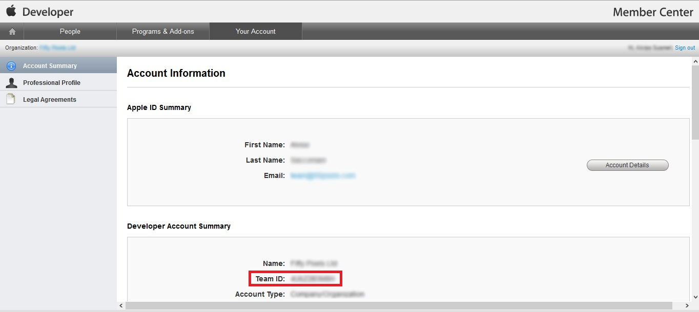
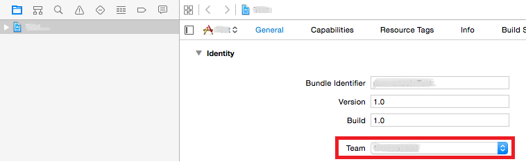

Manage the Team ID when the Mac computer has more than one developer account. Description
The Development Team ID property helps the developer to explicitly manage the Team ID when the Mac computer has more than one developer account. How to know my Team-ID?1. Login to Developers Apple page  2. Go to "Your account" tab  3. Search "Developer Account summary", and there it is the Team-ID associated with you Apple-ID.  4. Copy the 10-characters string that appears in Team-ID field to GeneXus Development Team ID property. Then, this Team ID will be used as a prefix for the Bundle Id of your application.  Scope Objects: Main Smart Devices See Also
|